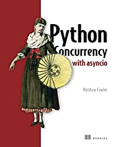
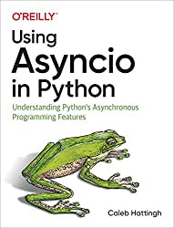
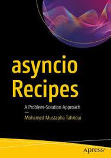
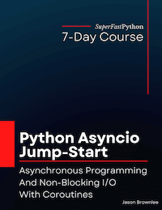
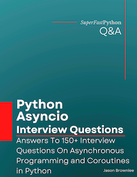

Python Asyncio Books
Books on asyncio remain a great way to learn asynchronous programming in Python.
Asyncio is a new and exciting addition to Python3 for asynchronous programming.
It can be challenging to use, especially for developers new to the asynchronous programming paradigm.
Therefore, we need a good book on Python asyncio.
In this article, we will review all of the books dedicated to Python asyncio, along with my recommendations.
Let's get started.
5 Books on Python Asyncio
There are 5 books dedicated to the topic of Python asyncio, they are:
- Python Concurrency with asyncio, Matthew Fowler, 2022.
- Using Asyncio in Python, Caleb Hattingh, 2020.
- asyncio Recipes, Mohamed Mustapha Tahrioui, 2019.
Also, I have written some books on asyncio, they are:
- Python Asyncio Jump-Start, Jason Brownlee, 2022.
- Python Asyncio Interview Questions, Jason Brownlee, 2022.
Do you know about a book that I missed (somehow)?
Let me know in the comments and I will get a copy and review it.
Next, let's take a closer look at each book in turn.
Python Concurrency with asyncio
This is a reasonably new and perhaps more complete treatment of asyncio compared to some of the other books.
- Title: Python Concurrency with asyncio
- Author: Matt Fowler
- Year: 2022
- Pages: 376 pages

Book Blurb:
Learn how to speed up slow Python code with concurrent programming and the cutting-edge asyncio library.
Use coroutines and tasks alongside async/await syntax to run code concurrently
Build web APIs and make concurrency web requests with aiohttp
Run thousands of SQL queries concurrently
Create a map-reduce job that can process gigabytes of data concurrently
Use threading with asyncio to mix blocking code with asyncio codePython is flexible, versatile, and easy to learn. It can also be very slow compared to lower-level languages. Python Concurrency with asyncio teaches you how to boost Python's performance by applying a variety of concurrency techniques. You'll learn how the complex-but-powerful asyncio library can achieve concurrency with just a single thread and use asyncio's APIs to run multiple web requests and database queries simultaneously. The book covers using asyncio with the entire Python concurrency landscape, including multiprocessing and multithreading.
Purchase of the print book includes a free eBook in PDF, Kindle, and ePub formats from Manning Publications.
About the technology
It's easy to overload standard Python and watch your programs slow to a crawl. The asyncio library was built to solve these problems by making it easy to divide and schedule tasks. It seamlessly handles multiple operations concurrently, leading to apps that are lightning fast and scalable.About the book
Python Concurrency with asyncio introduces asynchronous, parallel, and concurrent programming through hands-on Python examples. Hard-to-grok concurrency topics are broken down into simple flowcharts that make it easy to see how your tasks are running. You'll learn how to overcome the limitations of Python using asyncio to speed up slow web servers and microservices. You'll even combine asyncio with traditional multiprocessing techniques for huge improvements to performance.What's inside
Build web APIs and make concurrency web requests with aiohttp
Run thousands of SQL queries concurrently
Create a map-reduce job that can process gigabytes of data concurrently
Use threading with asyncio to mix blocking code with asyncio codeAbout the reader
For intermediate Python programmers. No previous experience of concurrency required.
I like the modern crop of Manning technical books, and this book is no exception.
The new asyncio module is challenging to understand. This book is focused on helping newer Python developers get started with asyncio.
My motivation for writing this book was to fill this gap that exists in the Python landscape on the topic of concurrency, specifically with asyncio and single-threaded concurrency. I wanted to make the complex and under-documented topic of single-threaded concurrency more accessible to developers of all skill levels.
I like that it it has many different types of worked examples, see the table of contents to see what I mean:
- Chapter 1: Getting to know asyncio
- Chapter 2: asyncio basics
- Chapter 3: A first asyncio application
- Chapter 4: Concurrent web requests
- Chapter 5: Non-blocking database drivers
- Chapter 6: Handling CPU-bound work
- Chapter 7: Handling blocking work with threads
- Chapter 8: Streams
- Chapter 9: Web applications
- Chapter 10: Microservices
- Chapter 11: Synchronization
- Chapter 12: Asynchronous queues
- Chapter 13: Managing subprocesses
- Chapter 14: Advanced asyncio
This might also be the limitation of the book.
To me, I feel like we spend too much time on "real world" examples and third-party libraries instead of digging into the asyncio library in the standard library. Admitted the stdlib is limited.
The code examples are available on GitHub here:
Grab a copy of Python Concurrency with asyncio.
Using Asyncio in Python
This might have been the first book on asyncio.
It is short but effective at getting you up to speed with this relatively new approach to concurrency in Python.
- Title: Using Asyncio in Python
- Subtitle: Understanding Python's Asynchronous Programming Features
- Author: Caleb Hattingh
- Year: 2020
- Pages: 163 pages

Book blurb:
If you're among the Python developers put off by asyncio's complexity, it's time to take another look. Asyncio is complicated because it aims to solve problems in concurrent network programming for both framework and end-user developers. The features you need to consider are a small subset of the whole asyncio API, but picking out the right features is the tricky part. That's where this practical book comes in.
Veteran Python developer Caleb Hattingh helps you gain a basic understanding of asyncio's building blocks―enough to get started writing simple event-based programs. You'll learn why asyncio offers a safer alternative to preemptive multitasking (threading) and how this API provides a simple way to support thousands of simultaneous socket connections.
- Get a critical comparison of asyncio and threading for concurrent network programming
- Take an asyncio walk-through, including a quickstart guide for hitting the ground looping with event-based programming
- Learn the difference between asyncio features for end-user developers and those for framework developers
- Understand asyncio's new async/await language syntax, including coroutines and task and future APIs
- Get detailed case studies (with code) of some popular asyncio-compatible third-party libraries
This too is a second edition, the first edition was published in 2018.
It is another O'Reilly book, but at 163 pages, I would not call it the definitive book on the topic.
This book is laser-focused on getting you up-to-speed on asyncio and where you might be able to use it in your projects.
The new Asyncio features are not going to radically change the way you write programs. They provide specific tools that make sense only for specific situations; but in the right situations, asyncio is exceptionally useful. In this book, we're going to explore those situations and how you can best approach them by using the new Asyncio features.
A helpful summary of the table of contents is as follows:
- Chapter 1: Introducing Asyncio
- Chapter 2: The Truth About Threads
- Chapter 3: Asyncio Walk-Through
- Chapter 4: 20 Asyncio Libraries You Aren't Using (But... Oh, Never Mind)
- Chapter 5: Concluding Thoughts
- Appendix A: A Short History of Async Support in Python
- Appendix B: Supplementary Material
The (unofficial?) code examples from the book are available on GitHub here:
Grab a copy of Using Asyncio in Python.
asyncio Recipes
As its name suggests, this is a book of recipes for Python asyncio. A cookbook of sorts.
- Title: asyncio Recipes
- Subtitle: Understanding Python's Asynchronous Programming Features
- Author: Mohamed Mustapha Tahrioui
- Year: 2019
- Pages: 341 pages

Book blurb:
Get the most out of asyncio and find solutions to your most troubling Python programming problems. This book offers a pragmatic collection of recipes by going beyond online resources and docs to provide guidance on using this complex library. As such, you'll see how to improve application performance and run computationally intensive programs faster.
asyncio Recipes starts with examples illustrating the primitives that come with the asyncio library, and explains how to determine if asyncio is the right choice for your application. It shows how to use asyncio to yield performance gains without multiple threads, and identifies common mistakes and how to prevent them. Later chapters cover error-handling, testing, and debugging. By the end of this book, you'll understand how asyncio runs behind the scenes, and be confident enough to contribute to asyncio-first projects.What You Will Learn
- Discover quirky APIs such as the event loop policies
- Write asyncio code with native coroutines
- Use the ast module to find legacy asyncio code
- Work with contextvars
- See what a async context manager is and why a lot of asyncio APIs use themWho This Book Is For
Experienced Python developers or hobbyists who want to understand asyncio and speed up their applications by adding concurrency to their toolkit.
The downside is that it is a little dated. It was published in 2019 and the asyncio API has moved on.
Some recipes are out of date. It does not make the book useless, just helpful in a bounded manner.
If you know this, you can update the recipes in your mind while reading. But you will also miss recent additions to the API, like asyncio.TaskGroup, asyncio.timeout, and on.
Nevertheless, each recipe is divided into:
- Problem: A definition of the specific issue we may have in asyncio
- Solution: A description of the general solution
- Options: Different specific code examples that can be chosen to implement the solution.
- How it Works: Description of how the option works to solve the problem.
It's a helpful structure, but it's boring to read.
This is not a book you read cover to cover.
Instead, it's a book you check when you are having a specific issue.
It is also a book you flip through to get familiar with (or as a reminder for) common problem-solution pairs.
Used in this way, it's valuable.
Since its advent, asyncio has added countless APIs and keywords to the Python language (async/await). Its steep learning curve scares some developers from trying it. However, it's a powerful technology that's even been used by big players like Instagram. The motivation of this book is to help more developers adopt asyncio and experience the joy of using asyncio for fun and profit. With that said, enjoy this book while learning more about asyncio!
The recipes are organized into chapters, but the table of contents in the book is a bit of a mess, too busy and hard to read. This means it's challenging to find the help you need on demand.
It might be easier to get the ebook version and grep/control-f your way to the required sections as needed.
Below is a helpful summary of the table of contents is as follows:
- Chapter 01: Preparing for the Recipes
- Chapter 02: Working with Event Loops
- Chapter 03: Working with Coroutines and Async/Await
- Chapter 04: Working with Async Generators
- Chapter 05: Working with Async Context Manager
- Chapter 06: Communication Between Asyncio Components
- Chapter 07: Synchronization Between Asyncio Components
- Chapter 08: Improving ASyncio Applications
- Chapter 09: Working with Network Protocols
- Chapter 10: Preventing Common Asyncio Mistakes
- Appendix A: Setting Up Your Environment
- Appendix B: Event Loops
The code examples from the book are available on GitHub here:
Grab a copy of asyncio Recipes.
Python Asyncio Jump-Start
This is my book on getting you started with asyncio, super fast.
- Title: Python Asyncio Jump-Start
- Subtitle: Asynchronous Programming And Non-Blocking I/O With Coroutines
- Author: Jason Brownlee (me!)
- Year: 2022 (but I updated it all the time)
- Pages: 182 pages

Book blurb:
Asyncio is an exciting new addition to Python
It allows regular Python programs to be developed using the asynchronous programming paradigm.
It includes changes to the language to support coroutines as first-class objects, such as the async def and await expressions, and the lesser discussed async for and async with expressions for asynchronous iterators and context managers respectively.
Asyncio is the way to rapidly develop scalable Python programs capable of tens or hundreds of thousands of concurrent tasks.
Developing concurrent programs using coroutines and the asyncio module API can be very challenging for beginners, especially those new to asynchronous programming.
Introducing: "Python Asyncio Jump-Start". A new book designed to teach you asyncio in Python, super fast!
You will get a rapid-paced, 7-part course focused on getting you started and make you awesome at using asyncio.
Including:
- How to define, schedule, and execute asynchronous tasks as coroutines.
- How to manage groups of asynchronous tasks, including waiting for all tasks to complete, waiting for the first task to complete, or the first task to fail.
- How to define, create, and use asynchronous iterators, generators, and context manages
- How to share data between coroutines with queues and how to synchronize coroutines to make code coroutine-safe.
- How to run commands as subprocesses and how to implement asynchronous socket programming with streams.
- How to develop a port scanner that is nearly 1,000 times faster than the sequential version.Each of the 7 lessons was carefully designed to teach one critical aspect of asyncio, with explanations, code snippets, and complete examples.
Each lesson ends with an exercise for you to complete to confirm you understood the topic, a summary of what was learned, and links for further reading if you want to go deeper.
Stop copy-pasting code from StackOverflow answers.
Learn Python concurrency correctly, step-by-step.
This book is designed to bring you up to speed with how to use asyncio fast and thoroughly.
It is laser-focused on teaching you two things:
- The new coroutine language features in Python.
- The high-level API in the standard library for application developers.
It is how I would walk you through asyncio if we were sitting together, pair programming.
The structure of the book is a course with 7 lessons.
They are as follows:
- Lesson 01: Asyncio Concurrency
- What are Coroutines
- What is Asynchronous Programming
- Welcome to Asyncio
- Asyncio Hello World Example
- When to Use Asyncio
- Lesson 02: Coroutines and Tasks
- How to Create and Run Coroutines
- How to Create and Run Tasks
- How to Use Asyncio Tasks
- Lesson 03: Collections of Tasks
- How to Run Many Tasks as a Group
- How to Wait for Many Tasks
- How to Wait for a Task With a Timeout
- How to Handle Tasks in Completion Order
- How to Run Blocking Tasks
- Lesson 04: Iterators, Generators, and Context Managers
- How to Use Asynchronous Iterators
- How to Use Asynchronous Generators
- How to Use Asynchronous Context Managers
- Lesson 05: Queues and Synchronization Primitives
- What is Coroutine-Safe
- How to Share DataBetweek Coroutines with Queues
- How to Protect Critical Sections with a Mutex Lock
- How to Limit Access to a Resource with a Semaphore
- How to Signal Between Coroutines Using an Event
- How to Coordinate Using a Condition Variable
- Lesson 06: Subprocesses and Streams
- How to Run Commands in Subprocesses
- How to Use Non-Blocking I/O Streams
- Lesson 07: Port Scanner Case Study
- Develop an Asyncio Port Scanner
- How to Open a Socket Connection on a Port
- How to Scan a Range of Ports on a Server (slow)
- How to Scan Ports Concurrently (fast)
- How to Report Scan Results Dynamically
The code examples from the book are available on GitHub here:
Grab a copy of Python Asyncio Jump-Start.
Also available from me directly, GumRoad, Amazon, Google Books, and Google Play.
Python Asyncio Interview Questions
I wrote this book too, specifically to address all the requests I got for interview questions on asyncio.
- Title: Python Asyncio Interview Questions
- Subtitle: Answers To 150+ Interview Questions On Asynchronous Programming and Coroutines in Python
- Author: Jason Brownlee (me!)
- Year: 2022 (but I updated it all the time)
- Pages: 83 pages

Book blurb:
How well do you know asyncio in Python?
Python includes changes to the language itself to support coroutines as first-class objects and the asyncio module provides an API for developing asynchronous programs.
Asyncio is challenging to learn for beginners and challenging to use for experts and beginners alike.
Asynchronous programming is an alternative paradigm that is quite different from the classical imperative and object-oriented programming paradigms that are useful.
- Do you know how to cancel an asynchronous task?
- Do you know how to execute a list of coroutines concurrently?
- Do you know how to execute blocking calls in an asyncio program?Discover 150+ interview questions and their answers on Python asyncio.
- Study the questions and answers and improve your skill.
- Test yourself to see what you really know, and what you don't.
- Select questions to interview developers for a new role.Prepare for an interview or test your asyncio and coroutine skills in Python today.
The book is divided into sections and each section contains questions in asyncio and a long and detailed answer, far more than you would ever give in an interview.
The question-and-answer format provides a great way to learn about asyncio, very quickly.
What topics are covered?
The questions are divided into major topics, they are:
- Asynchronous Programming
- Coroutines
- Asyncio
- Run Coroutines
- Working with Tasks
- Run Multiple Coroutines
- Working with Coroutines
- Waiting for Tasks
- Blocking Tasks
- Event Loop
- Advanced Tasks
- Iterators, Generators, and Context Managers
- Synchronization Primitives
- Queues
- Subprocesses
- Streams
Grab a copy of Python Asyncio Interview Questions.
Also available from me directly, GumRoad, Amazon, Google Books, and Google Play.
Recommendations
If you are looking to get up to speed with asyncio really fast, I'd recommend my book "Python Asyncio Jump-Start", probably paired with "Python Asyncio Interview Questions" to challenge and confirm you understand what you have learned.
Another good crash course would be Caleb Hattingh's "Using Asyncio in Python". Although a little dated, it is short, sweet, and will get you up and running.
For a larger dive into asyncio, I'd recommend Matt Fowler's "Python Concurrency with asyncio", mainly for the practical projects, and less so for the focus on the standard library. You could pair it with Mohamed Mustapha Tahrioui's "asyncio Recipes" or "Python Asyncio Jump-Start" to sharpen your handling of the asyncio standard library.
I hope that helps.
Have you read any of these books?
Let me know your thoughts in the comments below. below.
Takeaways
You now know about all of the books available on Python asyncio.